Conguaglio energia e contatore manomesso: la prescrizione biennale
Un conguaglio energetico da oltre 22.000 euro è stato dichiarato prescritto dal Tribunale di Roma. Secondo i giudici, la prescrizione biennale introdotta dalla Legge di Bilancio 20…
Contributi non versati dal datore: il lavoratore perde la pensione?
Quando il datore di lavoro omette di versare i contributi e questi cadono in prescrizione, il lavoratore rischia un buco nella carriera assicurativa. L'ordinamento offre un rimedio…
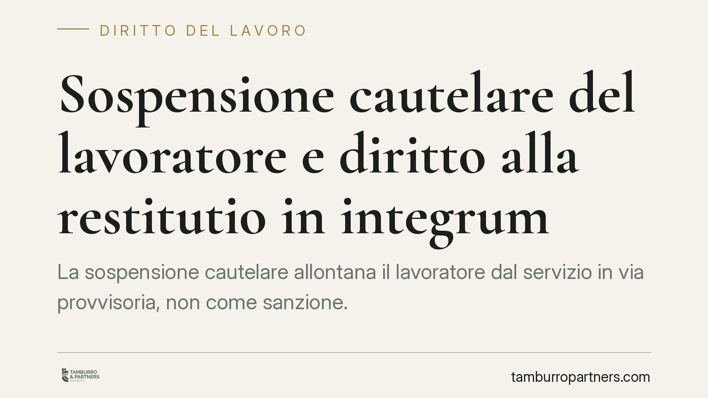
Sospensione cautelare del lavoratore e diritto alla restitutio in integrum
La sospensione cautelare allontana il lavoratore dal servizio in via provvisoria, non come sanzione. Se il presupposto viene meno, si apre il tema della restitutio in integrum: rip…
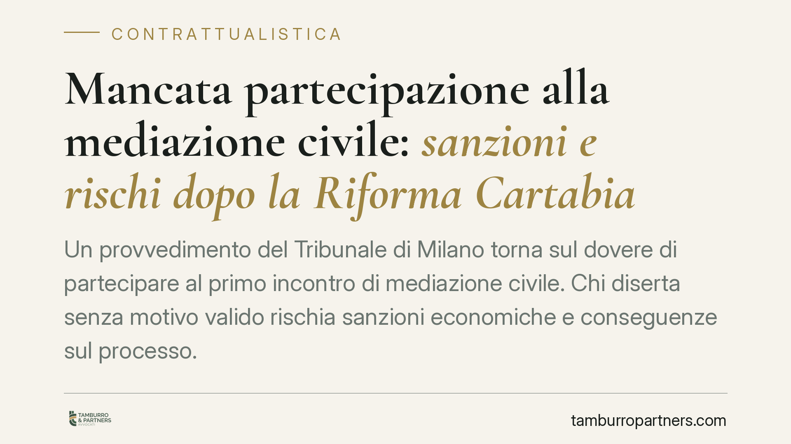
Mancata partecipazione alla mediazione civile: sanzioni e rischi dopo la Riforma Cartabia
Un provvedimento del Tribunale di Milano torna sul dovere di partecipare al primo incontro di mediazione civile. Chi diserta senza motivo valido rischia sanzioni economiche e conse…
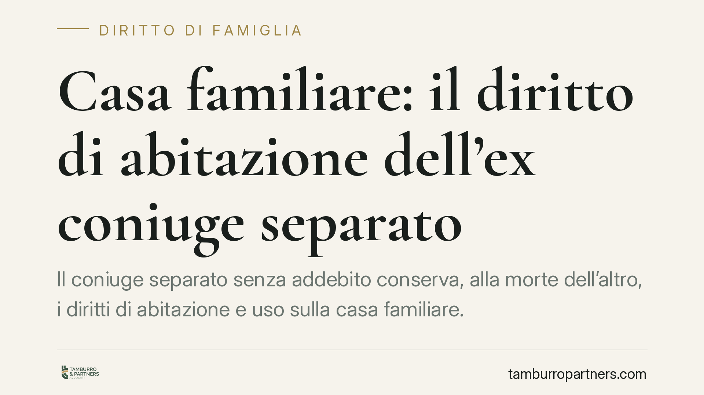
Casa familiare: il diritto di abitazione dell'ex coniuge separato
Il coniuge separato senza addebito conserva, alla morte dell'altro, i diritti di abitazione e uso sulla casa familiare. Lo ribadisce la Corte di Cassazione, che allinea la posizion…
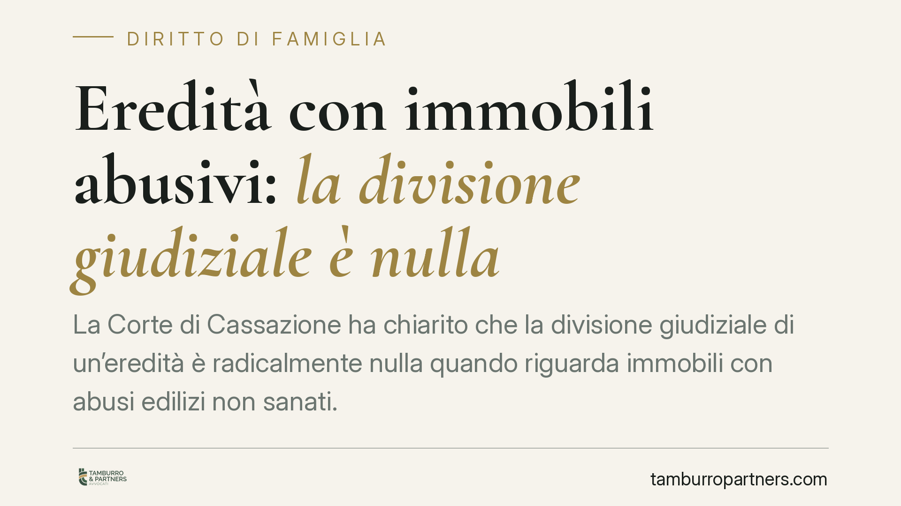
Eredità con immobili abusivi: la divisione giudiziale è nulla
La Corte di Cassazione ha chiarito che la divisione giudiziale di un'eredità è radicalmente nulla quando riguarda immobili con abusi edilizi non sanati. Si tratta di una nullità fo…
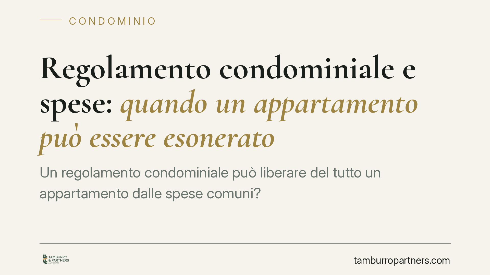
Regolamento condominiale e spese: quando un appartamento può essere esonerato
Un regolamento condominiale può liberare del tutto un appartamento dalle spese comuni? La Corte di Cassazione fissa un confine netto: l'esonero è possibile solo con regolamento con…
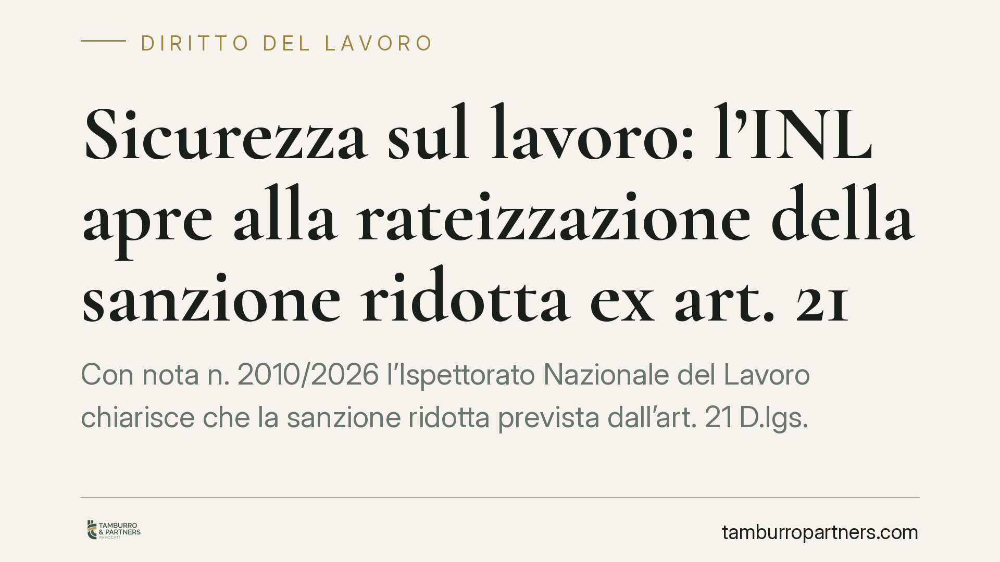
Sicurezza sul lavoro: l'INL apre alla rateizzazione della sanzione ridotta ex art. 21
Con nota n. 2010/2026 l'Ispettorato Nazionale del Lavoro chiarisce che la sanzione ridotta prevista dall'art. 21 D.lgs. 758/1994, dovuta dopo l'adempimento della prescrizione in ma…
Errore della cancelleria sull'avviso di deposito: l'appello tardivo va comunque giudicato
Quando la cancelleria comunica una data di deposito della sentenza errata e il difensore calcola su quella il termine per impugnare, l'appello non è necessariamente tardivo. Un rec…
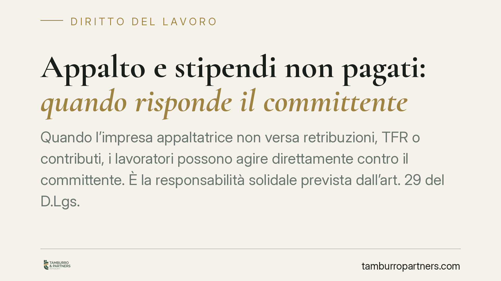
Appalto e stipendi non pagati: quando risponde il committente
Quando l'impresa appaltatrice non versa retribuzioni, TFR o contributi, i lavoratori possono agire direttamente contro il committente. È la responsabilità solidale prevista dall'ar…
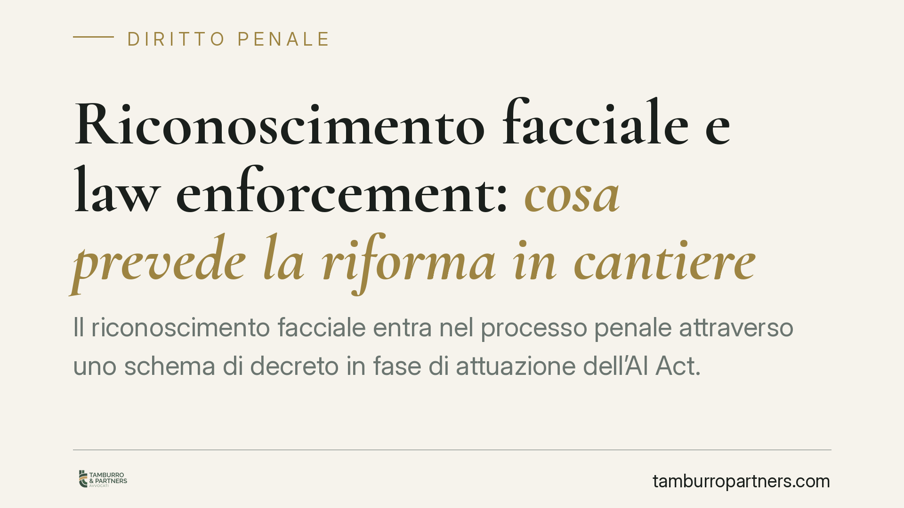
Riconoscimento facciale e law enforcement: cosa prevede la riforma in cantiere
Il riconoscimento facciale entra nel processo penale attraverso uno schema di decreto in fase di attuazione dell'AI Act. Si delinea un doppio binario tra uso preventivo e investiga…
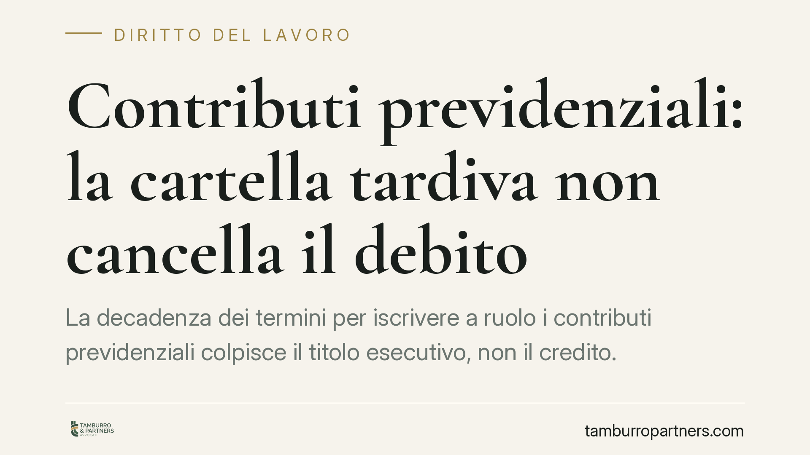
Contributi previdenziali: la cartella tardiva non cancella il debito
La decadenza dei termini per iscrivere a ruolo i contributi previdenziali colpisce il titolo esecutivo, non il credito. In altre parole: la cartella tardiva perde efficacia, ma la …
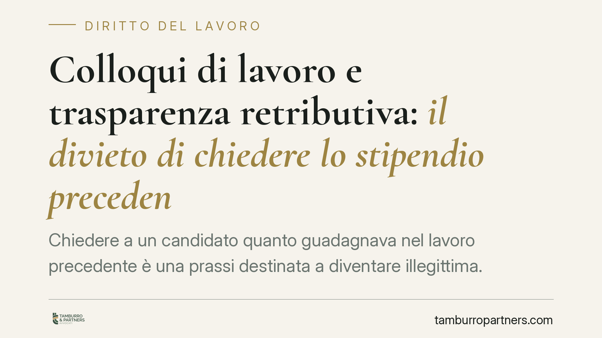
Colloqui di lavoro e trasparenza retributiva: il divieto di chiedere lo stipendio precedente
Chiedere a un candidato quanto guadagnava nel lavoro precedente è una prassi destinata a diventare illegittima. La direttiva europea sulla trasparenza retributiva vieta questa doma…
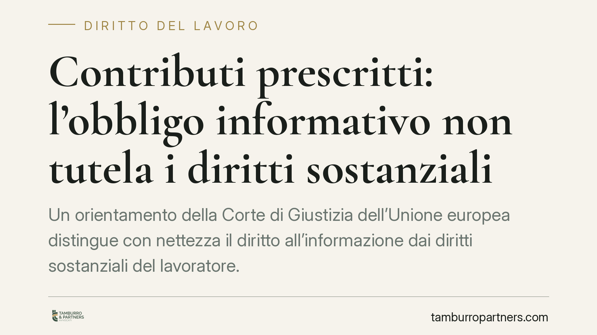
Contributi prescritti: l'obbligo informativo non tutela i diritti sostanziali
Un orientamento della Corte di Giustizia dell'Unione europea distingue con nettezza il diritto all'informazione dai diritti sostanziali del lavoratore. La normativa sull'obbligo in…
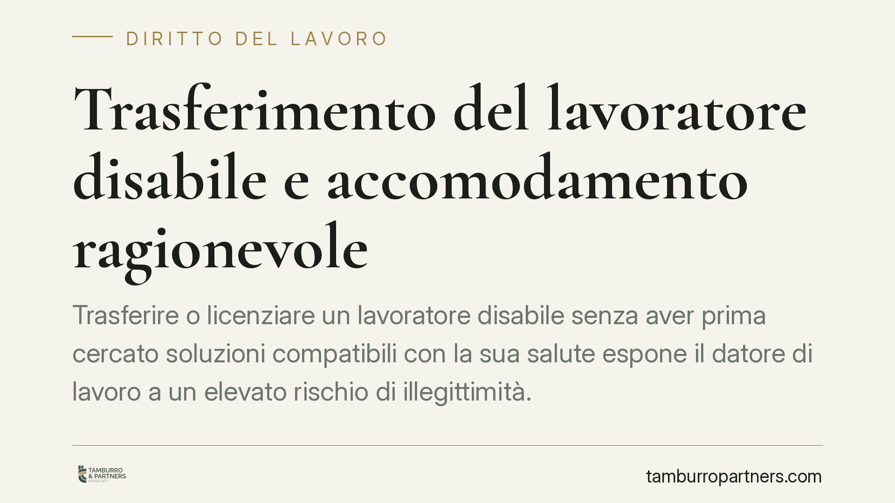
Trasferimento del lavoratore disabile e accomodamento ragionevole
Trasferire o licenziare un lavoratore disabile senza aver prima cercato soluzioni compatibili con la sua salute espone il datore di lavoro a un elevato rischio di illegittimità. La…
Paternità biologica: l'azione del figlio non si prescrive
La Corte di Cassazione torna a confermare un principio consolidato: l'azione con cui il figlio chiede l'accertamento della paternità biologica non è soggetta a prescrizione. E il r…
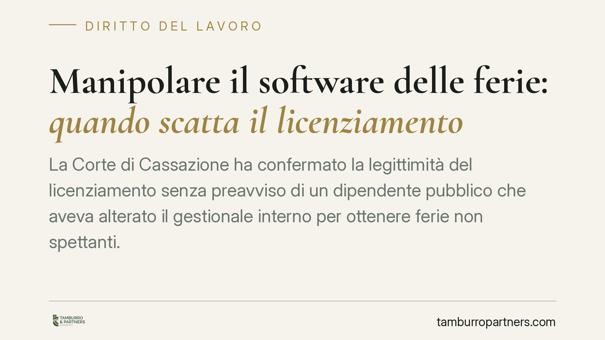
Manipolare il software delle ferie: quando scatta il licenziamento
La Corte di Cassazione ha confermato la legittimità del licenziamento senza preavviso di un dipendente pubblico che aveva alterato il gestionale interno per ottenere ferie non spet…
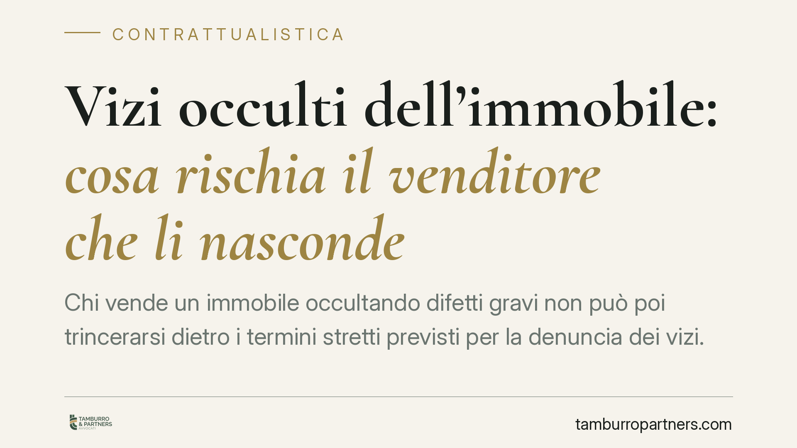
Vizi occulti dell'immobile: cosa rischia il venditore che li nasconde
Chi vende un immobile occultando difetti gravi non può poi trincerarsi dietro i termini stretti previsti per la denuncia dei vizi. La giurisprudenza consolidata distingue tra sempl…
Timbratura GPS in smart working: i limiti tra controllo e privacy
Una recente pronuncia di merito avrebbe ritenuto lecita la timbratura con geolocalizzazione GPS per i dipendenti in smart working, purché limitata all'istante della marcatura. Il t…
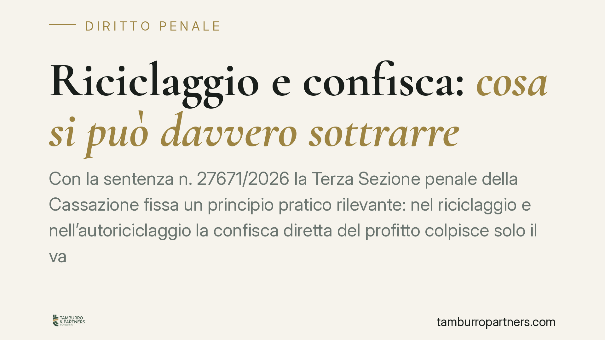
Riciclaggio e confisca: cosa si può davvero sottrarre
Con la sentenza n. 27671/2026 la Terza Sezione penale della Cassazione fissa un principio pratico rilevante: nel riciclaggio e nell'autoriciclaggio la confisca diretta del profitto…
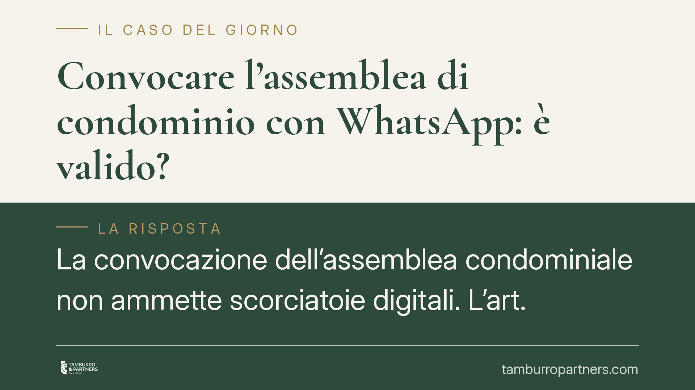
Convocare l'assemblea di condominio con WhatsApp: è valido?
La convocazione dell'assemblea condominiale non ammette scorciatoie digitali. L'art. 66 delle disposizioni di attuazione del codice civile indica forme precise per l'avviso, e la m…

TFR nel pubblico impiego: quando decorre la prescrizione
Nel pubblico impiego la prescrizione del TFR e quella delle retribuzioni correnti seguono regole diverse. Il trattamento di fine rapporto matura e diventa esigibile solo alla cessa…

Affido minori: l'allontanamento resta l'ultima risorsa
Con l'ordinanza n. 23759/2026, la Cassazione ha annullato un allontanamento fondato solo sulla scarsa collaborazione dei genitori con i servizi sociali. Il messaggio è netto: separ…

L'amministratore che nasconde una multa rischia la revoca?
Il Tribunale di Genova ha revocato un amministratore che aveva taciuto all'assemblea una sanzione comunale di circa 44.000 euro, legata a ponteggi abbandonati in un cantiere Superb…

L'amministratore di condominio dopo la revoca: quali poteri restano
Quando l'assemblea o il giudice revoca l'amministratore, l'incarico non sempre cessa in modo immediato e completo. Fino alla nomina del successore possono residuare poteri limitati…

Divisione ereditaria: l'immobile si assegna solo su richiesta
Nella divisione di un'eredità, il coerede titolare della quota maggiore non riceve automaticamente l'immobile indivisibile. Secondo un orientamento consolidato, il giudice può asse…

Criptovalute non dichiarate: controlli fiscali e rischio penale
L'Agenzia delle Entrate ha intensificato gli accertamenti su chi detiene criptovalute senza dichiararle, incrociando i dati trasmessi dagli exchange. Con il recepimento della DAC 8…

Contratto di agenzia internazionale: il giudice competente si radica sulla zona assegnata
Una recente pronuncia delle Sezioni Unite affronta un nodo pratico frequente: quando un agente italiano opera per un preponente estero, quale giudice decide la controversia? La ris…

Maltrattamenti in famiglia: quando si configura il reato ex art. 572 c.p.
Il reato di maltrattamenti in famiglia non nasce da un singolo episodio, ma da una serie di condotte che rendono la convivenza abituale fonte di sofferenza. Comprendere quando scat…

Casa comprata da un solo coniuge: quando entra in comunione legale
Comprare casa a proprio nome durante il matrimonio non basta a renderla un bene personale. Secondo la Corte d'Appello di Bologna (sent. n. 1687/2025), la sola dichiarazione del con…